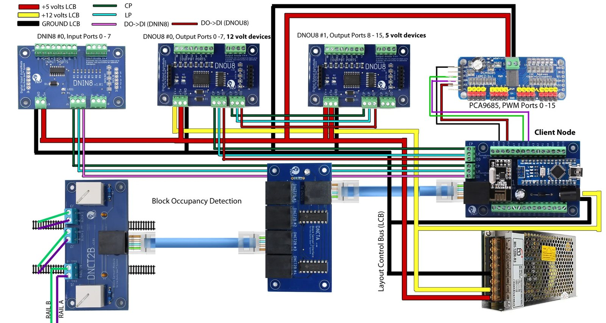

Behind the Scenes

How the layout works when the crews aren't looking: the radios under the layout, the signals, and the software that decides which cars move.
The Build
HART fills one room. The track plan settled in July 2025: the benchwork footprint, old maps of the island laid over it to place the yards and plants, then the main line, the yard on the peninsula and the helix down to staging. Crews already run sessions on the railroad while construction goes on around them. The first card follows the room month by month, and the last two show how the panels and the software grew.
Photos · month by month
The build timeline
Photos of the room from bare walls in February 2025 to the helix going up in October 2026, with the earlier tabletop layout first.
Finished
The staging level
The lower level, at the bottom of the helix. It is finished, and trains already run on it.
Complete
The helix
A spiral of track that lets trains change levels in a small space: the construction plan and every printed fixture.
Framing and cut sheets
The main level
Framing drawings, plywood cut sheets and a lumber cut list. Work resumes after Thanksgiving.
Drawn to scale
The track plan
The staging, main and upper levels from the layout plan, with switch positions, the test loop and block lengths.
Cork · plan of August 2025
The roadbed plan
6 mm cork under the main, staging and helix tracks, 3 mm under branch and industry tracks, with the level drawings, the material list and a photo of cork on the main level.
Panels
How the dispatcher panels grew
Both CTC panels, the Layout Editor panel underneath them and the generated system schematic, redrawn step by step from the first draft to the finished board.
Article · October 2026
Bringing the railroad together
How AI grew up alongside the railroad, from the first research to the way the software, research and website were organised by October 2026.
How it works today
Switch motors, detectors and signal lamps are wired to small radio nodes, and an Arduino passes their messages to JMRI, which knows where every switch is lined and which track is occupied. Each session starts from shipper orders that STS, the Shipper-driven Traffic Simulator, fills with cars and turns into waybills and switch lists.
Electronics
LCOS and the Arduino bridge
The radio nodes, what each one is wired to, and how their messages reach JMRI.
Electronics · Drawings
Layout documentation
How the staging level and the helix are wired: power districts, sections and detection, turnouts and crossovers, the reversing sections and the computer link.
Control & signals
How the signals work
LCOS and JMRI signals, masts placed by prototype rules, JMRI's route discovery and the hand-off between the two.
Operations · July 2026
Setting up car movement on the HART Railroad
From Post-it flags to STS: car cards and waybills, a track scale for the coke hoppers, and hundreds of simulated sessions to tune the traffic.
Locomotives · November 2026
Speed matching CSX 2121 and 2738
How AI timed both locomotives over the detection blocks and corrected 2738's decoder to match 2121: the results, and every recorded run with its readings and speed curves.
Reference
Pages generated from the railroad's data and the repository. Each one is rebuilt with the site, so its lists and counts match the railroad as it is.
Devices Live
Device viewer
Every switch, signal and sensor on the railroad, searchable, with its control point and hardware.
Electronics Live
Wiring viewer
Each radio node pin by pin: which output lights each signal lamp, throws each switch, or reads each detector.
Control & signals Live
What we added to JMRI
The scripts and files we add to a stock JMRI install, and how control of the signal lamps passes between JMRI and the field.
Control & signals Live
The tables file
One XML file holds every block, switch, signal and route JMRI knows. How it is laid out, a browser for every table, and how the parts link.
Software Live
Inside the repository
How the repository is laid out: the folders, where each fact lives, the shared code and submodules, and how a change reaches the layout and this website.
Software Live
Pipeline map
The source files, scripts and generated outputs in the repository as boxes and arrows. Pick a file to see what feeds it and what it feeds, from the schematic to the panels, tables.xml and this website.
Tools to take home
Tools made for HART that work on other layouts too, and one side project. All are free.
Plugin · GitHub
model-railroad-skills
Skills for Claude Code on JMRI panels, signals, the Dispatcher System, MQTT, CATS and STS, each rule checked against the program's source. Two separate plugins in it manage Operations Pro and print car cards from photos.
Article · Operations Pro plugin
The Operations Pro plugin
A plugin that sets up, checks and explains a JMRI Operations Pro railroad, the invented railroad it built as its own test, and a 43-case walkthrough to follow.
Article · car-cards plugin
The car cards plugin
A free plugin that turns phone photos of your cars and locomotives into printed car cards, with a review page to check every number first.
Article · schematic-maps plugin
The schematic-maps plugin
A free plugin that draws a track plan as a schematic sheet, a Layout Editor panel and a CATS desk, tested on the 38 example layouts AnyRail publishes.
Tool · GitHub
JMRI roster to the CS-105
Copies the JMRI roster into a TCS CS-105 command station, names and function labels included, so LCC throttles list every locomotive.
Article · Side project
STL Studio: building Tower LCC+Q logic with blocks
A free web editor I built for the LCC community: snap blocks together and copy the logic into an RR-CirKits Tower LCC+Q. Not part of HART's control system.
Achievements & clinics
HART is working toward Master Model Railroader in the NMRA Achievement Program and toward the OPSIG operations awards. The trackers show what is done and what is left, and the clinic was written for the Sunrise Trails Division.
Tracker
NMRA Achievement Program
Each certificate toward Master Model Railroader, what is left for each one, and which to work on next.
Tracker
OPSIG Achievement Program
Each OPSIG operations award, what HART has met, and the count toward Ninja (Qualified Operator).
Clinic · Sunrise Trails Division
The Diverging Route clinic
A 45-minute clinic on using AI on a model railroad: the slides, each with its speaker notes.
Study guide
C&E exam study guide
A study guide, flashcards and practice questions for the OPSIG Conductor & Engineer exam, from the seven OPSIG study guides.
Game
Extra East
A game on the C&E rules: run a freight extra over the invented Kestrel Valley in 1949 under train orders or today under track warrants, or work the Ironton yard job. A new run every day.
Game
Extra East: HART Railroad
Work a shift on the Pittsburgh & Ohio Valley, 1979 to 1990: the ore job, the furnace job, the night tricks, an extra, or a yardmaster's desk at South Yard. Jobs and moves from Mark Connolly's blog.